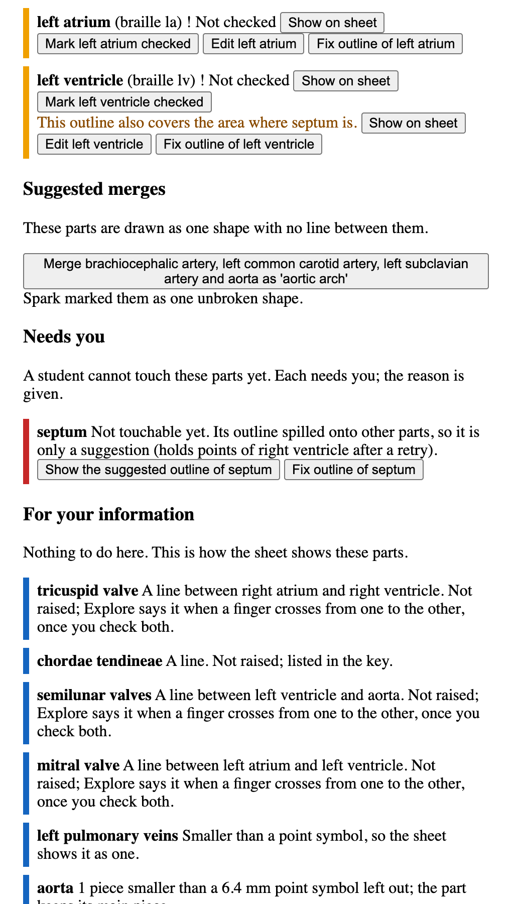

Run it on your computer
Mock mode needs no key and no phone. It replays answers recorded from the live models, so it makes no network calls and costs nothing. The live setup with an iPhone comes after it.
Mock mode, in four commands
Needs macOS, uv, Node 24 and liblouis (brew install liblouis). The recordings match a figure by its PNG’s exact bytes, and Linux encodes the same pixels to other bytes, so on Linux the tests run but the recorded heart and brain do not replay (services/api/tests/recorded_png.py).
git clone https://github.com/DeepakKTS/talking-tactile.git
cd talking-tactile
make install
MOCK_META=1 make devThe API runs on port 8000 and the web app on http://localhost:5173. Ctrl-C stops both.
Make a sheet
- Once the API answers (the first start can take 40 s), open
http://localhost:5173/author, choosefixtures/heart.png, keep the default options and press “Make a tactile sheet”. - Wait for “Ready for review.” (about 25 s). The “Needs you” list shows the septum, and a merge proposal shows the aortic arch.
- Press “Mark all parts checked”, confirm, then “Publish for students”.
- Press “Open version 1 in Explore”, then Enter or “Start exploring”: Explore says the sheet’s title and summary. Touch needs a camera over the printed sheet (the live setup below).

Heart diagram-en.svg by ZooFari, CC BY-SA 3.0, via Wikimedia Commons. Resized and placed on a white background.
What mock mode cannot do
On this path a typed question says “Questions are not working right now”. Recorded answers exist only for the heart and the brain as the question eval published them (the heart with the aortic arch merged and two teacher descriptions). To get them, run make demo-sheets before MOCK_META=1 make dev, and before uploading the heart yourself: it publishes both sheets exactly as the eval did, in mock mode, in about a minute. The brain replays with grade band “6 to 8”.
make check runs every test, lint and type check, as CI does.
Live, with an iPhone
Live mode calls Muse Spark, SAM 3.1 and Muse Voice Transcribe, and costs Meta Model API credits. The Mac runs the API and serves the app to the phone over HTTPS on the local network. These steps follow README.md and docs/DEMO.md.
- The key. Copy the example file and set
MODEL_API_KEYin it. The key stays on the Mac; the browser never sees it.cp .env.example services/api/.env - A certificate for the phone. An iPhone opens the camera only on an HTTPS page. With mkcert installed and its local root made (
mkcert -install), make a certificate for this Mac’s LAN address and.localname. Run it again when the LAN address changes.cd apps/web && npm run cert:phone - Trust the mkcert root on the iPhone. Send the phone the
rootCA.pemfile from the foldermkcert -CAROOTprints, install it as a profile, then turn on full trust for it under Settings, General, About, Certificate Trust Settings. These are mkcert’s steps for iOS, not the repository’s. - Check the setup.
make preflightprints OK or FAIL for each check: the key file (never printed), the phone certificate, the ports, the published sheets, CI and the credits left. Fix every FAIL first.make preflight - Start the servers.
make demo-livestarts the API on 127.0.0.1:8000, the web app for the phone over HTTPS on port 5173 and the Gate B touch-test page on port 8443, undercaffeinate -iso the Mac cannot sleep mid-call. It refuses to start while one of those ports is in use, and prints the iPhone addresses. Ctrl-C stops all three.make demo-mockdoes the same with no Meta calls.make demo-live caffeinate -dimsu # in another terminal: keeps the display awake - Open the app on the iPhone. On the same Wi-Fi, in Safari, use the Mac’s
.localname first (scutil --get LocalHostNameprints it), or the addressnpm run cert:phoneprinted. Start with the device check:https://<your-mac>.local:5173/explore?check=1 - Publish a sheet first. A fresh clone has no published sheets. Make one in Author on the Mac (
https://localhost:5173/author, asmake demo-liveprints it), print it, then open it in Explore on the phone.
The phone connection guide covers the device check, printing, the mount and setting the corners.